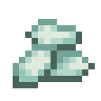
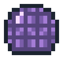
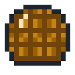
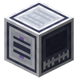

Compute
Training a model is multiplying numbers, and the numbers can be counted. A flop is one multiply or one add. A model of N parameters reading D tokens takes about 6ND of them: two for each parameter on each token going forward, four coming back. The Core counts them as they happen, and its Compute tab sets what it counted beside that six.
What limits a run is how many flops it can do a second, how much memory holds it, and the energy each flop takes. All three depend on what you build.

Process nodes
A Training Accelerator is one device. The Fabricator makes them from a matrix multiply photomask, and prints them at the node of the wafers in its wafer slot. Each node down holds eight times the memory and runs four times the flops, and each flop takes half the energy.
| Node | Wafer | Flops a second | Memory | FE/t at full load | Flops per FE |
|---|---|---|---|---|---|
| 90 nm | Wafer | 10 G | 512 KiB | 80 | 6.25 M |
| 28 nm | 28 nm Wafer | 40 G | 4 MiB | 160 | 12.5 M |
| 7 nm | 7 nm Wafer | 160 G | 32 MiB | 320 | 25 M |
| 3 nm | 3 nm Wafer | 640 G | 256 MiB | 640 | 50 M |


 Crafting (Shapeless)
Crafting (Shapeless)


Crafting (Shapeless)


Power
The first four Accelerators touching a block run on what that block can spare, and draw nothing. Every other device takes power from the network it is part of: Accelerators and rack blocks carry power like cables, so one cable to any of them reaches all of them. A device with no power to draw stays dark and lends nothing.
A run on devices that take power pays for its flops as it does them, at what those devices get for a unit of energy. If its network cannot pay, the run waits, and the Compute tab says so. Everything else that takes compute (Assemblers, Model Servers, Forecaster III) pays each device's full-load draw while it works, and counts a finer device for more: a 28 nm device for four of the first, a 7 nm for sixteen, a 3 nm for sixty-four.
Memory
To train a parameter takes four numbers of four bytes each: the weight, its gradient and Adam's two running averages. Sixteen bytes a parameter. A run that does not fit will not start. A Core alone holds 2 MiB, which trains about 131,000 parameters; Accelerators on their own add their memory to it. This is the plan's parameter-state budget. Training stores these arrays in fp32 even when a Recipe rounds values to a smaller format, so reduced precision does not shrink this budget. Temporary activations and working buffers are additional host memory.
Racks and pods
Devices also go in the eight bays of a Rack Module, each with a strip of light that shows how busy it is. Up to four modules stacked under a Rack Switch make a rack of up to 32 devices. Modules only join up and down: racks side by side stay apart.
Whatever takes compute reaches a rack by touching it, or along Interconnect. A cluster with no Pod Switch has the use of one rack; other racks stay dark. Interconnect from a Pod Switch to Rack Switches makes a pod of up to eight racks, 256 devices. More than one pod takes a hall.
Using a switch by hand says how its cluster stands.


Sharing out the work
The button beside the Compute tab chooses how the next run shares its work. Each way splits something different, with a thread of its own for every device, and each takes exactly the steps one device would.
The tab labels the reserved devices, threads and memory as the plan. Its measured timeline describes the latest completed split step. Reduced precision, document masks, z-loss and a second head use the general graph path: data and pipeline jobs bypass their replicas or stages, while tensor jobs retain their matrix workers. The tab names the fallback and clears the split timing; rack lights show no measured load for that pass. Changing the Recipe back resumes split measurements. The allocation and its memory gate stay in place, and counted flops are still charged at that allocation's energy efficiency. Changing the sharing button selects the next run's allocation.
- One device. The Core and the Accelerators on their own pool their memory and threads, and each operation's rows go to whichever thread is free. Racks sit idle. The model has to fit the pool.
- Data parallelism. Every device holds the whole model and takes its share of the batch. Each computes its gradients on its own, the gradients are added up a pair of devices at a time, and the new weights go back out. It adds no memory: only devices that can hold all of the model take part. What crosses the links grows with the model.
- Tensor parallelism. Every matrix multiply is cut by its columns among the devices, each working from its own slice of the weights, and they all meet at the end of each one. A model can be larger than any device. It meets for every multiply, so small layers spend more time meeting than working.
- Pipeline parallelism. The model's layers are cut into stages, one to a device, and the batch into microbatches that go down the stages one after another and come back up. Each device holds only its stage. No more stages than the model has layers worth one, and the stages wait while the pipeline fills and drains: those are its bubbles, about (stages - 1) / (microbatches + stages - 1) of the time when the stages are level. The tab draws them.
What each of them gained on eight threads, for one model of four layers and about 820,000 parameters, against a single thread:
| Way | Faster by | Time spent waiting | Through links, each step |
|---|---|---|---|
| One device | ×2.8 | ||
| Data parallelism | ×5.7 | 6% | 46 MB |
| Tensor parallelism | ×1.6 | 62% | 100 MB |
| Pipeline parallelism | ×2.2 | 32% | 6 MB |
Pipeline parallelism used four stages of the eight devices, and four stages with eight microbatches would have waited 27% if they were level. The numbers change with the model: the tab shows yours. It also says how long what crossed the links would take over a rack's links, a pod's and a hall's, where devices share no memory: 100, 25 and 6 GB a second. That is the bill each way runs up as a cluster grows.
Where the numbers come from
The Compute tab separates the allocation plan from measurements: flops as they are counted, measured device work and waiting, and bytes that would cross a link. A model practising by playing also runs forward at every look it plays, so its flops a parameter a token come to several times that six. What a Hall Console says of a run too large to do is a prediction from the same sums, and it says so.
Two Rack Modules, each with eight devices in its bays.
A Rack Switch on top makes them a rack. Its front says what the cluster is running.
A Pod Switch, joined by Interconnect, lets a cluster use more than one rack.
 WaferNether QuartzAmethyst Shard28 nm WaferDiamondPrismarine Crystals7 nm WaferNetherite ScrapEcho Shard3 nm Wafer
WaferNether QuartzAmethyst Shard28 nm WaferDiamondPrismarine Crystals7 nm WaferNetherite ScrapEcho Shard3 nm Wafer


Tensor CasingCopper IngotRack ModuleGlass PaneRedstone DustInterconnect